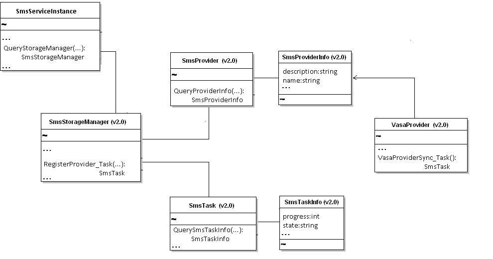

Welcome to the vSphere vCenter Storage Monitoring Service API Reference documentation. This API reference provides comprehensive information about all operations (methods) and data structures available through the vSphere vCenter Storage Monitoring Service API (SMS API).
The VMware vCenter Storage Monitoring Service (SMS) is a Web Service that runs on the vCenter Server host. You use the SMS API to connect to the SMS endpoint and retrieve information about storage arrays that are managed by VASA Providers.
The SMS API is exposed through the Web service that runs on vCenter Server systems. The API provides access to several query and synchronization operations, available from the SMS service interface (SmsServiceInstance).

The SMS API Reference is an HTML frameset. Click an entry in the left-hand pane to display information in the right-hand pane.
Click a category in the left-hand pane to display a summary list of data types or operations for that category. To quickly find documentation for a specific data type or operation, enter the name in the Quick Index field.